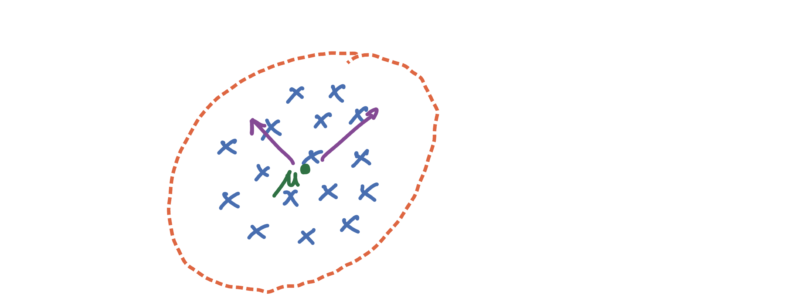
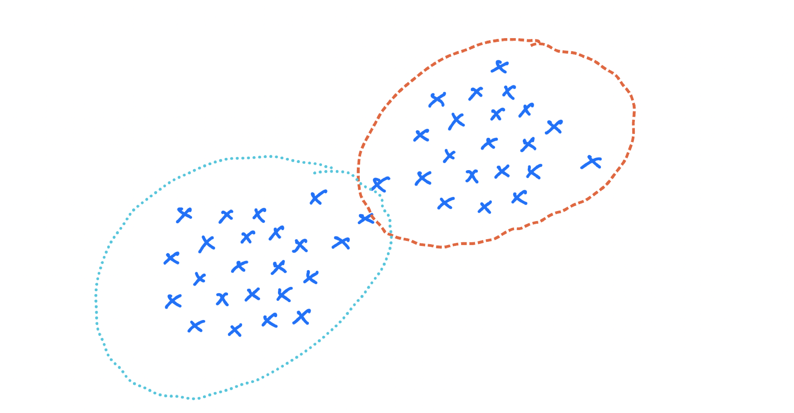
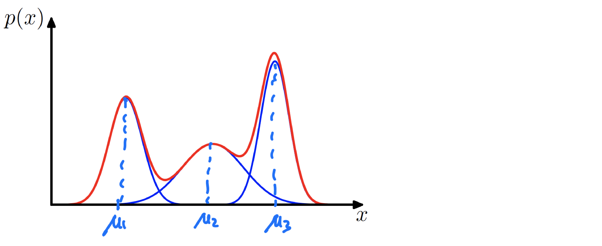
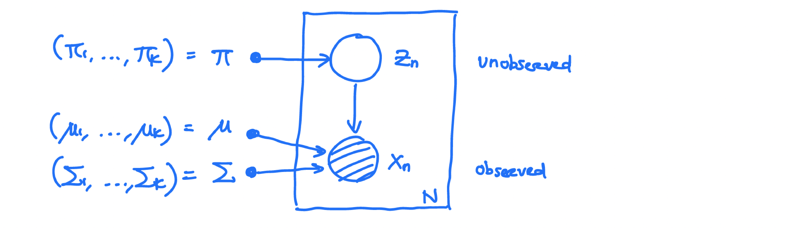
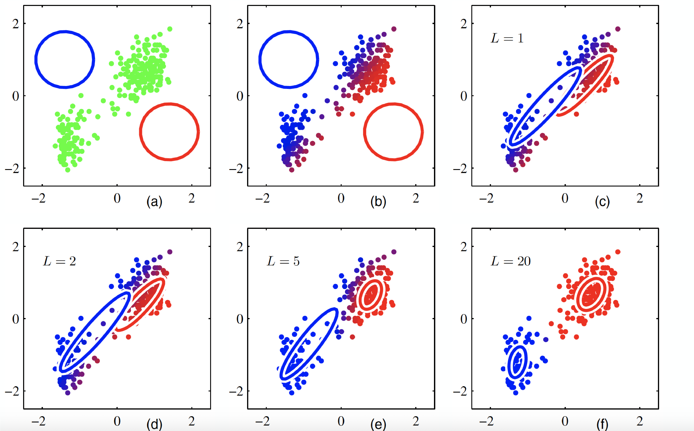

Mixture Models and EM
How to model data with a probability distribution? For example, if data looks like a circle or symmetric, we may model it with a Gaussian distribution:

With the following density function:
$$ \text{Normal}(\mu,\Sigma) = \frac{\exp(-\frac{1}{2}(x-\mu)^T\Sigma^{-1}(x-\mu))}{(2\pi)^{\frac{d}{2}}\sqrt{\text{det}{\Sigma}}} $$
Given i.i.d data points $x_1$, $x_2$, .., $x_n \sim \text{Normal}(x|\mu^,\Sigma^)$, maximum likelihood estimator is:
$$ \begin{align} \begin{aligned} \text{MLE} (\mu,\Sigma) = & \arg \max \prod_{i=1}^n \text{Normal}(x_i|\mu,\Sigma) \\\ =& \arg \min -\sum_{i=1}^n \log \text{Normal}(x_i|\mu,\Sigma) \\\ =& \arg \min \sum_{i=1}^n \frac{1}{2}(x-\mu)^T\Sigma^{-1}(x-\mu)+\frac{1}{2}\log \text{det} \Sigma + \frac{d}{2}\log 2\pi \end{aligned} \end{align} $$
The solution is:
$$ \begin{align} \begin{aligned} \mu_{\tiny\text{MLE}} = & \frac{1}{n} \sum_{i=1}^n x_i = \bar{x} \\\ \Sigma_{\tiny\text{MLE}}= & \frac{1}{n} \sum_{i=1}^n (x_i -\mu_{\tiny\text{MLE}})(x_i -\mu_{\tiny\text{MLE}})^T \end{aligned} \end{align} $$
But how about data that looks like this?

Here, Gaussian could be a better model, and we can not fit a multi-modal Gaussian. One solution is a mixture of Gaussian:
$$ p(x) = \pi_1 \text{Normal}(x|\mu_1,\Sigma_1)+..+ \pi_k \text{Normal}(x|\mu_k,\Sigma_k) $$
The following plot is an example of a Gaussian mixture distribution in one dimension showing three Gaussians (each scaled by a coefficient) in blue and their sum in red.
$$ \begin{align} \begin{aligned} p(x) = \pi_1 \text{Normal}(x|\mu_1,\sigma_1^2)+ \pi_2 \text{Normal}(x|\mu_2,\sigma_2^2) + \pi_3 \text{Normal}(x|\mu_3,\sigma_3^2), \\\ \pi_1 + \pi_2 + \pi_3 =1, \\\ \pi_1 , \pi_2 , \pi_3 \geq 0. \end{aligned} \end{align} $$

Mixture of Gaussian with $K$ components
Let’s formalize a mixture of the Gaussian model:
$$ p(x) = \sum_{i=1}^K \pi_k \text{Normal}(x| \mu_k,\Sigma_k) $$
define $z\in (0,1)^k$ to encode which component $x$ comes from: $z=(z_1,z_2,..,z_k)$ and $z_k\in(0,1)$ and $z_1+..+z_k=1$. Or in other words:
$$ z \in e_1=\left( \begin{array}{ccc} 1 \\\ 0 \\\ 0 \end{array} \right), e_2=\left( \begin{array}{ccc} 0 \\\ 1 \\\ 0 \end{array} \right), e_3=\left( \begin{array}{ccc} 0 \\\ 0 \\\ 1 \end{array} \right) $$
Graphical model:
$$ p(x,z) = p(z).p(x|z) $$
- define marginal on $z$:
$$ p(z_k=1) = \pi_k \quad \text{for} \quad 1\leq k\leq K $$
where $\pi=(\pi_1,..,\pi_k)$ satisfies $0\leq pi_k \leq 1$, $\sum_{k=1}^K \pi_k = 1$. Because $z=(z_1,..,z_k) \in (0,1)^k$ we can write the following equation:
$$ p(z) = \prod_{k=1}^K \pi_k^{z_k} $$
since only one $z_k=1$ and all $z_j=0,j\neq k$.
- define conditional:
$$ \begin{aligned} p(x|z_k=1) = \text{Normal}(x| \mu_k,\Sigma_k) \\\ p(x|z) = \prod_{k=1}^K \text{Normal}(x|\mu_k,\Sigma_k)^{z_k} \end{aligned} $$
- define joint probability:
$$ \begin{aligned} p(x,z) = & p(z).p(x|z) \\\ =& \prod_{k=1}^K (\pi_k\text{Normal}(x|\mu_k,\Sigma_k)) ^{z_k} \end{aligned} $$
or $p(x,z_k=1) = \pi_k \text{Normal}(x|\mu_k,\Sigma_k)$
- marginal is a mixture of Gaussian:
$$ p(x) = \sum_z p(x,z) =\sum_{k=1}^K p(x,z_k=1) = \pi_k \text{Normal}(x|\mu_k,\Sigma_k) $$
Therefore to sample from a mixture of Gaussian:
$$ p(x) = \sum_k \pi_k \text{Normal}(x|\mu_k,\Sigma_k) $$
We can do the following:
- draw a sample $z \sim p(z)$, so with probability $\pi_k$, we are in $k-$th component.
- given $z_k=1$ draw : $x|z_k=1 \sim \text{Normal}(x|\mu_k,\Sigma_k)$
If we think of $p(z_k=1)=\pi_k$ as prior, then given $x$, we can compute posterior distribution:
$$ \begin{aligned} \gamma(z_k) = & p(z_k=1|x) \\\ = & \frac{p(z_k=1).p(x|z_k=1)}{\sum_{i=1}^Kp(z_j=1).p(x|z_j=1)} \\\ =& \frac{\pi_k.\text{Normal}(x|\mu_k,\Sigma_k)}{\sum_{i=1}^K\pi_j.\text{Normal}(x|\mu_j,\Sigma_j)} \end{aligned} $$
Maximum Likelihood Estimation for Gaussian Mixture
Given observations $x_1,x_2,..x_N \in R^d$, we want to model using mixture of $K$ Gaussian (for a fixed $K$):
$$ p(x) = \sum_k \pi_k \text{Normal}(x|\mu_k,\Sigma_k) $$
for each $x_n \in R^d$ define latent variable $z_n \in (0,1)^k$:

joint probability for $x=(x_1,..,x_N)$ is defined as:
$$ \begin{aligned} p(x) = & \prod_{n=1}^N p(x_n) \\\ =& \prod_{n=1}^N \left ( \sum_k \pi_k \text{Normal}(x|\mu_k,\Sigma_k) \right) \end{aligned} $$
based on MLE estimator: $\pi = (\pi_1,..\pi_k)$ , $\mu=(\mu_1,..\mu_k)$ , $\sigma =(\Sigma_1,..\Sigma_k)$ to maximize log-likelihood :
$$ \begin{aligned} \log p(x) = & \sum_{i=1}^N \log \left( \sum_k \pi_k \text{Normal}(x|\mu_k,\Sigma_k) \right) \\\ =& \sum_{i=1}^N \frac{\exp(-\frac{1}{2}(x-\mu)^T\Sigma^{-1}(x-\mu))}{(2\pi)^{\frac{d}{2}}\sqrt{\text{det}{\Sigma}}} \end{aligned} $$
- suppose we fix $\pi = (\pi_1,..,\pi_k)$ , $\Sigma = (\Sigma_1,..,\Sigma_k)$, then we can optimize over $\mu=(\mu_1,..,\mu_k)$:
$$ \begin{aligned} \frac{\partial}{\partial \mu_k} \log p(x) = & \sum_{i=1}^N \frac{\pi_k \text{Normal}(x_n| \mu_k,\Sigma_k)}{\sum_{j=1}^K \text{Normal}(x_n| \mu_j,\Sigma_j} .\Sigma_k^{-1}(x_n-\mu_k)\\\ \end{aligned} $$
where ${\sum_{j=1}^K \text{Normal}(x_n| \mu_j,\Sigma_j)} = \gamma (z_{nk}) = p(z_{nk}=1|x_n)$. $$ \begin{aligned} \frac{\partial}{\partial \mu_k} \log p(x) = (\Sigma_k)^{-1} \sum_{n=1}^N \gamma(z_{nk})(x_n-\mu_k) \end{aligned} $$
To find a minimizer, set the gradient to $0$: $$ \begin{aligned} \mu_k = \frac{1}{N_k} \sum_{n=1}^N \gamma(z_{nk})x_n \end{aligned} $$ which is weighted average data points where $N_k = \sum_{n=1}^N \gamma (z_{nk})$ is efficient number of data points assigned to cluster $k$.
- Similarly, if we fix $\mu,\pi$ we can optimize over $\Sigma$:
$$ \begin{aligned} \Sigma_k = \frac{1}{N_k} \sum_{n=1}^N \gamma(z_{nk})(x_n-\mu_k)(x_n-\mu_k)^T \end{aligned} $$
- If we fix $\mu,\Sigma$ we can then optimize over $\pi$:
$$ \pi_k = \frac{N_k}{N} $$
The following plot illustrates the EM algorithm (Bishop Fig. 9.8). 
We covered this post in the introduction to machine learning CPCS 481/581, Yale University, Andre Wibisono where I (joint with Siddharth Mitra) was TF.